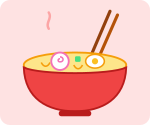
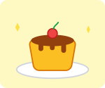

アカリの好きなもの
ゲーム
今いちばんハマっているのはマインクラフトです。友だちと海の上に大きな家を建てています。
くわしく知りたい人は マインクラフトの公式サイト を見てね。
好きな食べものベスト3
- カレーライス
- ラーメン
- プリン



好きなものベスト3
1位 ネコ

うちの白ネコのユキ。ひざの上でいつも昼寝しています。
2位 マインクラフト

建築が大好き。今は海の上の家を制作中です。
3位 カレー
横須賀といえばカレー。家では甘口、外では中辛に挑戦中。